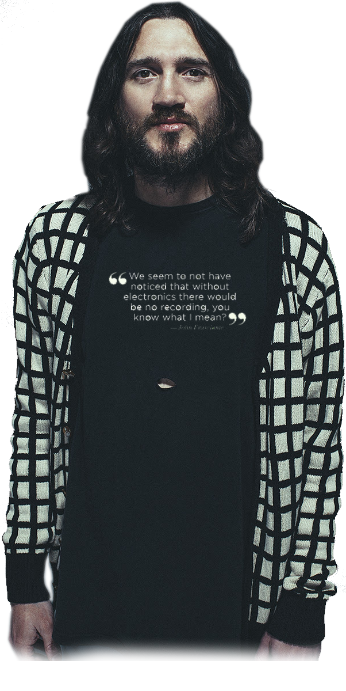
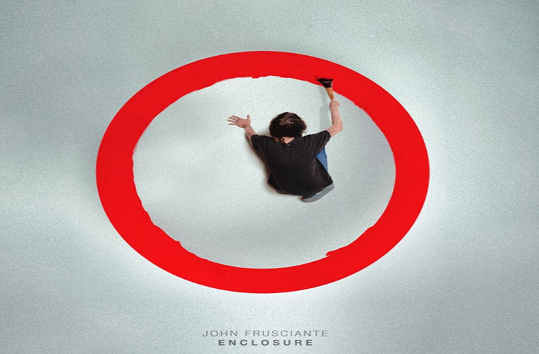

Co robisz jeśli jesteś jednym z najsłynniejszych gitarzystów rockowych, sprzedałeś miliony albumów i stworzyłeś najbardziej bodaj wielbioną w ciągu ostatnich trzech dekad alternatywną muzykę rockową? Jeśli jesteś byłym gitarzystą Red Hot Chili Peppers, Johnem Frusciante, patrzysz przed siebie, by stworzyć coś najbardziej ekscytującego w swojej karierze. Zamiast trzymać się pewnej i sprawdzonej formuły John stworzył nową, potem stworzył jeszcze nowszą, a potem jeszcze jedną. On nie tylko idzie wciąż do przodu – on idzie górą, dołem i bokami. Kiedy inni muzycy wybrali by bezpieczną ścieżkę i klepanie w kółko podobnych płyt, Frusciante woli stworzyć coś zupełnie odmiennego, zaczynając od podstaw. Na każdym etapie swojej kariery wyznaczał sobie nowe granice i cele, i ruszał dalej, skoro tylko je osiągnął. Z każdym wydawnictwem mamy wrażenie, że umysł Frusciante jest niewyczerpaną krynicą kreatywnej energii.
Na przestrzeni ostatnich kilku lat Frusciante skupił się na muzyce elektronicznej i dążył do stworzenia utworów, które zawierają znane elementy, ale jednocześnie są świeże i odkrywcze. Łącząc dubstep, hip hop, synthpop, house i rock eksperymentalny z bluesem, gospel i innymi interesującymi go stylami, na swoich ostatnich albumach, tchnął nieco nowego życia w czasem wtórną scenę muzyki elektronicznej. Jeśli coś powstało wcześniej, Frusciante tworzy z tego coś absolutnie nowego. Każdy muzyczny krok, który wykonuje przenosi go dalej od punktu wyjścia i przybliża do do jego muzycznej wizji – która jest niczym uciekający horyzont. Jego nowy, wydany w 2014 roku album „Enclosure”, to kontynuacja – i poszerzenie – drogi, która rozpoczęła się w 2012 roku od „Letur-Lefr” oraz „PBX Funicular Intaglio Zone” i była kontynuowana w 2013 roku na EP „Outsides”. Nagrywany równolegle z produkowaną przez Frusciante dla hip-hopowców Black Knights płytą, „Enclosure” jest albumem pełnym zadziwiających muzycznych „warstw”. Pod każdym melodyjnym pasażem napotykasz na wstrząsające całym ciałem dubstepowe rytmy, muzyczne „zawijasy” i „połamańce”. Im więcej razy jej słuchasz, tym jesteś w stanie odkryć więcej nowych dźwięków.
Stephen SPAZ Schnee miał możliwość porozmawiania z Johnem o albumie „Enclosure” i nie tylko….
STEPHEN SPAZ SCHNEE: Utwory na „Enclosure”, podobnie jak Twój ostatni solowy materiał, są bardzo niekonwencjonalne ze względu na obecność tych wszystkich interesujących warstw w nagraniach. Czy myślałeś o nich jako o wyzwaniu dla słuchacza, czy raczej postawiłeś wyzwanie sobie jako muzykowi?
JOHN FRUSCIANTE: Zdecydowanie poświęciłem dużo czasu by zrealizować wyzwanie, które postawiłem sobie samemu. Przez trzy lata uczyłem się swoich elektronicznych instrumentów i nic co robiłem, nie powstawało z myślą o tym, by to nagrywać. Pracowałem tylko nad tym, by się kształcić, by nauczyć się w jaki sposób włożyć w grę na instrumentach elektronicznych taką ekspresję, jaką potrafiłem włożyć w grę na gitarze – co przecież zabiera lata, by to osiągnąć. To takie proste, by iść utartymi ścieżkami w grze na instrumencie, który naprawdę świetnie znasz, ale w przypadku instrumentów elektronicznych, uczynienie ich ekspresyjnymi, wniknięcie w nie i osiągnięcie takiego samego poziomu płynnej interakcji z instrumentem, to zupełnie inna bajka. Tak więc w ciągu tych lat, nagrałem z moim

przyjacielem Aaronem Funkiem około 50 godzin muzyki, tworzonej w celu bycia niewydaną.Uważam, że każdy muzyk może się bardzo dużo nauczyć, jeśli tylko naprawdę nie weźmie pod uwagę publiczności. Jeśli zrobi to tylko dla siebie, w akcie zjednoczenia się z muzyką. Więc stopniowo ten stan umysłu stał się moim sposobem myślenia. Nawet jeśli miałem zamiar nagrać płytę, nieszczególnie próbowałem zrobić coś, co wywrze jakiś efekt na słuchaczu… Naprawdę nie biorę pod uwagę publiczności czy pojedynczego, przeciętnego odbiorcy. Spędzam cały mój czas studiując płyty i nagrywając muzykę. Muzyka, którą robię, choć brzmi niekonwencjonalnie, zawsze jest inspirowana jakims rodzajem muzycznej tradycji. Badam to, co ludzie robili z muzyką w przeszłości i próbuję robić to, czego wcześniej nie zrobiono, a co na swój sposób jest kontynuacją dawnych idei. W ten sposób muzyka wrasta w historię. W ciągu ostatnich 50 lat muzyczne mody zmieniały się tak szybko, że jeśli zmieniała się moda, to pewien muzyczny sposób myślenia również przestawał się rozwijać.
Więc przypatruję się historii muzyki, szukam czegoś, co mi się podoba, pomysłów które wówczas powstały i zostały zastąpione natychmiast czymś innym, i po prostu próbuję wykorzystać jakiś specyficzny walor takiej idei, który moim zdaniem może doprowadzić do czegoś nowego. Jest mnóstwo przykładów takich sytuacji w historii muzyki. Rock progresywny zatrzymał się gdy pojawił się punk rock, surf – gdy zaczęli grać The Beatles. To zdarzało się tak często. Więc wybieram rzeczy które mi się podobają i próbuję umiejscowić je w nowym kontekście, rozwinąć je, połączyć różne tradycje: styl produkcji jednego albumu z stylem gry na gitarze drugiego albumu…po prostu mieszać różne style tak dowolnie, jak to tylko jest możliwe. Sądzę, że wielu ludzi utkwiło w jakimś gatunku muzyki lub jakimś nurcie, a ja naprawdę wyszedłem poza bycie w jakimkolwiek nurcie czy rodzaju muzyki.
Wracając do utworów na Enclosure: czy nagrałeś je z myślą o umieszczeniu na jednym albumie, czy po prostu były to zrobione w róznych momentach nagrania, które według Ciebie po prostu pasowały do siebie?
JOHN FRUSCIANTE: To wszystko, co nagrałem od czasu „PBX Funicular Intaglio Zone”. Czyli myślałem o nich jako o albumie i nagrałem jeden po drugim. „PBX”, „Outsides” i „Enclosure” były po po prostu wszystkimi piosenkami, które nagrałem w ciągu około półtorej roku. Pracowałem również nad płytą Black Knights, gdy robiłem „Enclosure”. Odkąd tylko zacząłem tworzyć muzykę z myślą o jej wydaniu, wszystko co zrobiłem trafiło na płyty. Ostatnie trzy miesiące były pierwszym okresem w ciągu ostatnich lat, kiedy znów tworzyłem muzykę nie przeznaczoną do nagrywania i to nadal robię obecnie. Ale zdecydowanie osiągnąłem rodzaj stałości, którego nie miałem w zespole – w kwestii nie tworzenia czegokolwiek na próżno. Kiedy byłem zwykłym muzykiem, pisałem tak dużo piosenek, że nigdy nie miałem ich szansy nagrać. Teraz nie piszę piosenek tak często, ale kiedy to robię, nagrywam je, a kiedy je nagrywam, to ukazują się na płytach. To jest zupełnie odmienne o tego, jak to się dzieje powiedzmy w zespole rockowym, gdzie masz mnóstwo odrzuconych piosenek, gdzie pisze się ich znacznie więcej niż potrzeba, gdzie nie wiadomo, które z nich są dobre, a które złe, gdzie trzeba wszystko sortować i oceniać, które są najlepsze. Nie robię niczego takiego. Wszystko co robię, coś wyraża, a ja daję to światu.
Znalazłem w tych melodiach wiele piękna i emocji. Na przykład w „Cinch”, skoro tylko słuchacz znajdzie bazę tego utworu, zamienia się on w obezwładniająco silną emocjonalnie ścianę dźwięku. Jak znajdujesz takie melodie? Czy przychodzą do Ciebie zanim chwycisz za instrument? Czy pojawiają się gdy nagrywasz?
JOHN FRUSCIANTE: Według mnie to zależy. Jedna z rzeczy, którą często robię to napisanie takiej progresji akordów, o której wiem, że ciężko będzie mi ją zagrać na gitarze. Są pewne określone rodzaje progresji, które zna każdy gitarzysta i wokół nich zazwyczaj pisze się gitarowe solówki, bo one nie wymagają specjalnego myślenia i przychodzą bardzo naturalnie. Jeśli ktoś chce grać po buddyjsku, albo chce grać ładnie są pewne rodzaje progresji, które się wykorzystuje – możesz je po prostu grać i o nic się nie martwić.
Więc ja nie piszę już tego rodzaju progresji zbyt często. Piszę takie, które będą wyzwaniem dla gitarzysty chcącego zagrać na ich podstawie solo, więc zajmuje mi to chwilę, żeby się ich nauczyć, przywyknąć do nich i czuć się wystarczająco komfortowo podczas ich grania, by grać naprawdę swobodnie, by móc improwizować. Tak więc zaczynam od tych akordów i nagrywam bardzo prostą partię gitary, potem nieco bardziej skomplikowaną i dalej nakładam warstwy gitary w ten sam sposób – ustawiając je w kolejności od najprostszej do najbardziej złożonej, którą nagrywam jako ostatnią i która jest solówką. Ale nigdy nie byłbym w stanie wykonać tego gitarowego solo, gdybym wcześniej nie zrobił tych wszystkich prostszych gitarowych partii, które słyszysz wokół solówki. Tak więc odkryłem, że jeśli skupiam uwagę na muzyce, na jej wewnętrznej pracy, na jej teoretycznych aspektach, jeśli kładę na to nacisk, pomysły na melodie stopniowo pojawiają się same.
Jedna zadziwiająca rzecz którą zauważyłem grając przez ostatnie kilka lat wiele długich gitarowych solówek, to to, że potrafię wykonać powiedzmy trzy gitarowe solówki w czasie tego samego 10-cio minutowego utworu i przechodzić od jednej do drugiej, ponieważ w większości przypadków zmiany w kolejnych solówkach to techniczne zadanie, które chcę wykonać z powodu konstrukcji kompozycji, a nie z powodu naprawiania pomyłek. To raczej kwestia umiejętności sprawienia, by gitara zrobiła rzeczy, których nie można zrobić, ponieważ twoja lewa ręka na gitarze musi być w tym czy innym miejscu w konkretnym momencie lub w innym w innym momencie. Potrafię wykonać takie partie gitarowe, gdzie osiągam taki efekt, jakby ręka była wielkości całego gryfu, wiesz?
I zauważyłem, że w tych 10 minutowych solowkach zazwyczaj robię te same rzeczy w tym samym momencie pomimo tego, że niczego specjalnie nie zapamiętywałem. To muzyka podsuwa pomysły, bo wtedy moja uwaga jest skupiona na samej naturze muzyki.
Myślę, że kiedy zwrócisz swoją uwage ku organicznej naturze muzyki, ta muzyka podsuwa ci pomysły, które są znacznie bardziej usystematyzowane niż cokolwiek co mógłbyś sobie wyobrazić. Dla mnie zagranie tych samych rzeczy w tym samym momencie 8-minutowego solo w którym nic się nie powtarza, jest czymś co … czego człowiek nie jest w stanie opanować pamięciowo… pomimo, że one są powiązane ze sobą, te najdziwniejsze melodie i rytmiczne interakcje.
Mam poczucie, że ludzie owładnięci obsesją na punkcie tego, jakie wrażenie wywrą swoją grą nie są w stanie doprowadzić do jedności między swoim umysłem, a samą naturą muzyki…. Ponieważ natura muzyki sama w sobie ma znacznie więcej do zaoferowania muzykom niż ma do zaoferowania publiczność – jak pieniądze czy uznanie i inne tego rodzaju rzeczy, wiesz? Jest tyle cudownych rzeczy do odnalezienia, jeśli wszystko co robisz to skoncentrowanie swojej uwagi na samej naturze muzyki.
Co zainspirowało Cię do zwrócenia się w kierunku muzyki elektronicznej? Z mojego punktu widzenia to wygląda na logiczną kontynuację Twoich nieustannych muzycznych poszukiwań.
JOHN FRUSCIANTE: Chyba nie zdajemy sobie sprawy, że bez elektroniki nie byłoby nagrywania, wiesz co mam na myśli? Samo to, że istnieje nagrywanie nadaje muzyce elektroniczny charakter. Sam fakt, że słyszymy muzykę za pośrednictwem tych wszystkich zabiegów w studio! Elektronika sprawia, że mamy muzyke rockową ze wzmacniaczami, mikrofonami i głośnikami. To w sumie wygląda tak, że cały jej rozwój nastapił dzięki elektronice. Więc sama idea tego, że muzycy rockowi myślą, że elektroniczne instrumenty, takie jak automaty perkusyjne czy syntezatory, nie są częścią rockowego instrumentarium, jest z gruntu niewłaściwa.
Korzystam z instrumentów i urządzeń elektronicznych, które mogą być najbardziej użyteczne dla muzyka chcącego wszystko robic samodzielnie i nie chcącego być zmuszonym do polegania na muzykach sesyjnych czy zespole.
Słuchałem muzyki tworzonej przez takich ludzi, jak Autechre czy Venetian Snares i zaskakiwało mnie to, że ci ludzie są nawet bardziej samowystarczalni niż klasyczni kompozytorzy. Oni byli nadal zależni od orkiestr i od dyrygentów, musieli przejść przez wiele zawirowań, by ich muzyka została wykonana w odpowiedni sposób i walczyć z wieloma niedociągnięciami.

Słucham muzyki tych ludzi i zapiera mi dech na samą myśl o tym, że ta muzyka jest czystym wytworem ich umysłów i że nie było nawet żadnego fizycznie istniejącego instrumentu pomiędzy nimi, a muzyką. To jest coś, co stało się możliwe na naprawdę dużą skalę dopiero w ciągu ostatnich 30 lat. Moim zdaniem ci ludzi bardzo na tym korzystają. W muzyce rockowej jeśli ktoś chciał mieć bardziej „elektroniczne” brzmienie, musiał zatrudnić producenta, który był dobry w elektronice lub wynająć grupę ludzi, którzy mogli za niego wykonać całą potrzebną robotę. Po prostu zachwycam się tym, że tacy ludzie, bez pomocy inżynierów dźwięku i bez mówienia komuś co robić, są samowystarczalni i mogą tworzyć swoją własną muzykę na dużą skalę. To było dla mnie bardzo inspirujące. Jedyny przychodzący mi na myśl przykład kogoś, kto jest tradycyjnym, konwencjonalnym instrumentalistą, a zarazem programistą to Squarepusher (brytyjski muzyk Tom Jenkinson). Kiedy zorientujesz się, że nie ma rockowych muzyków, którzy to robią i że jest pewna grupa muzyków elektronicznych, którzy to robią, zaczynasz się zastanawiać czy to jest kurwa możliwe, żeby rockowy muzyk w ogóle pomyślał o tym, wiesz?
Czy to jest zarezerwowane tylko dla jakichś komputerowych geniuszy? Ale fakt, ze Jenkinson jest wirtuozem basu i zarazem wirtuozem programowania pokazał mi, że to jest możliwe. Więć stopniowo obie półkule mojego mózgu nauczyły się jedna drugiej. Kompozytor i gitarzysta, którzy siedzą we mnie mają duży wpływ na sposób jaki korzystam z sampli i w jaki programuję. A sposób w jaki korzystam z sampli wpłynął też znacząco na moją grę na gitarze. To spowodowało, że jako muzyk nie myślę o muzyce jako o idei którą przekładam na instrument, ale myślę o muzyce jako o kreowaniu dźwięku. W tej chwili jako gitarzysta patrzę na instrument pod kątem jego „elektroniczności”, pod kątem tego, jak mogę spróbować wydobyć z niego wiele dźwięku. Jeśli mogę to osiągnąć grając na trzech lub czterech strunach czy celowo robiąć dużo błędów, to to robię. Myślę o grze jako o sposobie wydobycia dźwięku, a nie pokazywania mojej wspaniałej techniki i biegłości.
Zauważyłem, że na tej płycie bardzo ważną rolę odgrywa rytm. Czy korzystasz z tych wszystkich dynamicznych rytmów, żeby przekazać emocje?
JOHN FRUSCIANTE: O tak. Na tym albumie naprawdę szukałem czegoś przeciwnego do łatwych do przewidzenia perkusyjnych rytmów, które zazwyczaj są w piosenkach. Naprawde lubię pisać wolne utwory, a potem programować szybkie bębny. Lubię przeciwstawienie tych dwóch rzeczy i lubię bębny, które są na różne sposoby rozbieżne z innymi instrumentami lub pozornie nie pasują do reszty kompozycji. Lubię zestawiać ze sobą kilka różnych koncepcji rytmicznych jednocześnie. Stopniowo nauczyłem się w jaki sposób sprawić, by szybki bit bębnów słuchacz odczuwał jako wolny. Jestem przyzwyczajony do wolnego śpiewania, więc kiedy po raz pierwszy próbowałem je połączyć z szybką perkusją, brzmiała zbyt skocznie, była zbyt „posiekana”, nie pasowała. Zabrało mi to trochę czasu zanim byłem w stanie zachować to, co jest dobre w wolnym śpiewie i grze na gitarze, jednocześnie będąc w kompletnie innej rytmicznej strefie.
O tak, jak powiedziałem wcześniej to wszystko zasługa warstw i kiedy słuchacz odkrywa je po kolei, znajduje wewnątrz te piękne melodie, te potężne, różnorodne rodzaje muzyki, których połączenie uczyniło je jeszcze silniejszymi.
JOHN FRUSCIANTE: To wspaniała sprawa, gdy jesteś w stanie pracować w ten sposób, w który ja pracuję i podchodzić do jednego pomysłu, jednej idei z różnych stron.
Gdy nagrywasz muzykę rockową w sposób konwencjonalny masz tendencję do kurczowego trzymania się tego, co robisz. Próbujesz „zapiąć się” w to, co robią inne instrumenty. Chcesz wyrazić to samo co one wyrażają. Iść z nimi w tym samym szeregu. Korzystając ze swojej metody i będąc jedynym muzykiem mam możliwość analizowania muzyki na różne sposoby i całkowitego zmieniania wcześniejszej wersji przez późniejszą. Próbowałem znaleźć związek między tradycyjnym pisaniem piosenek i różnymi rodzajami muzyki tworzonej poprzez programowanie, ponieważ w muzyce programowanej bębny zastąpiły melodię i stały się najważniejszym elementem w muzycznej hierarchii.
Melodia zawsze była najważniejszym elementem, ale potem, gdy pojawił się hip hop, acid house, jungle i wszelkie rodzaje muzyki house, to bębny stały się centralnym instrumentem.
W pewnym sensie straciłem zainteresowanie tradycyjnym pisaniem piosenek i muzyką rockową, choć jednym z moich głównych talentów jest tworzenie melodii. Pragnę tworzyć muzykę w której bębny są potraktowane jako priorytet, jako najważniejszy element, ale odkryłem, że chociaż nie dbam o pisanie melodii, nadal to robię, bo tylko tak potrafię, to jest część tego, kim jestem. Nie umiem tego odrzucić, pozbyć się tego, wiesz? Pragnę kontynuować robienie tego, co postrzegam jako pójście naprzód, traktować bębny jako najważniejszy instrument i znaleźć związek między tym, a tworzeniem melodii. Początkowo wydawało się to mordęgą, wydawało się czymś niemożliwym do dopasowania. Stopniowo jednak stało się to naprawdę naturalne i odkryłem, że mogę wydobyć z moich utworów coś, czego nie podejrzewałem, że w nich jest. Jako kompozytor zdaję sobie sprawę, że czasem po prostu nie wiem co wyjdzie z piosenki. To, co jest najfajniejsze w programowaniu i tworzeniu takiej muzyki, to to, że możesz iść w dowolnym kierunku w każdym momencie i to nie dlatego, że nie wiesz co chcesz osiągnąć, ale dlatego że pomysł może pojawić się w trakcie procesu tworzenia i skłonić cię do podążenia w swoją stronę. To jest naprawdę urzekające w muzyce elektronicznej, że możesz tworzyć muzykę bez pisania piosenek, i oczywiście wiele razy tak robiłem, ale odkryłem też, że fuzja tych dwóch kierunków jest naprawdę interesująca
Czy pamiętasz konkretny moment, kiedy zdałeś sobie sprawę, że chcesz być muzykiem? A może to była seria wydarzeń?
JOHN FRUSCIANTE: Nie, to po prostu zakiełkowało w mojej głowie, gdy miałem 4 lata. To po prostu tam siedziało – to nawet nie była decyzja. Raczej to było coś, o czym wiedziałem, że będę to robił. To, co odczuwałem wtedy słysząc muzykę było uczuciem silniejszym, niż cokolwiek innego, co czułem w swoim życiu. Miałem poczucie zamknięcia się w muzyce, odgrodzenia się nią od świata, gdy jej słuchałem. Nie wiedziałem jeszcze wtedy zbyt wiele o muzyce, ale wraz z upływem czasu pewne utwory zwróciły moją uwagę. To było lata przed tym, gdy zacząłem grać na instrumencie, gdy mogłem powiedzieć jaka muzyka jest związana z tym, co powinienem zrobić….i to były najbardziej znaczące momenty mojego dzieciństwa.
Podziękowania dla Johna Frusciante
Specjalne podziękowania dla Jordan Tappis, Juliana Chaveza i Dany House
Przetłumaczyła: Wanda Modzelewska
Edycja oraz oprawa graficzna: Marcin Rudnik
Źródło: http://www.discussionsmagazine.com/2014/03/an-exclusive-interview-with-john.html